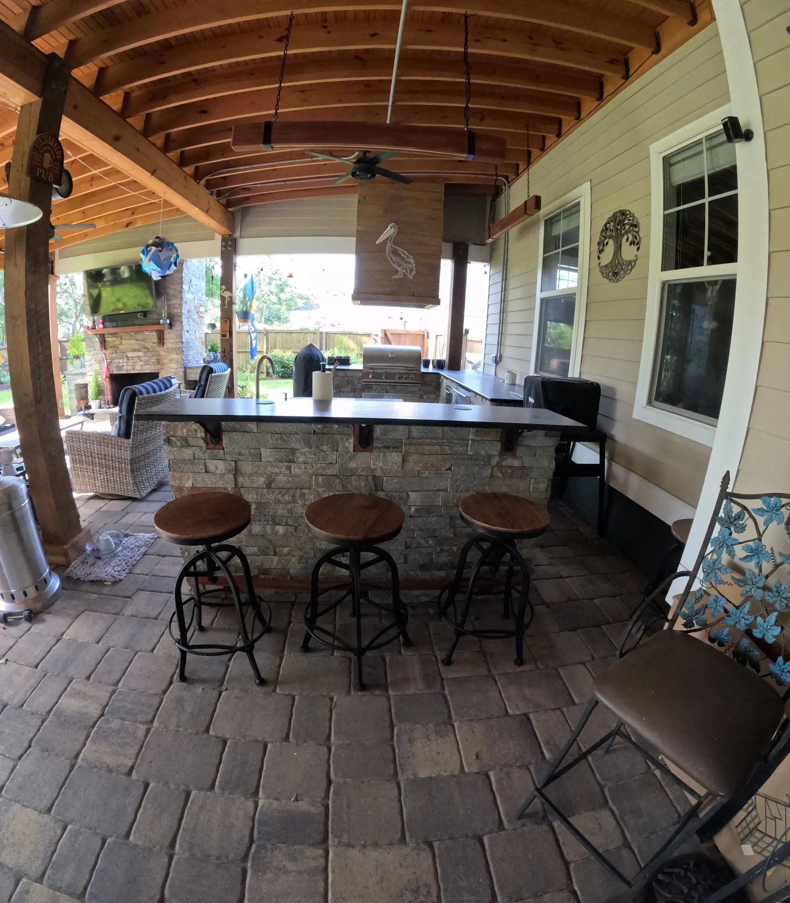
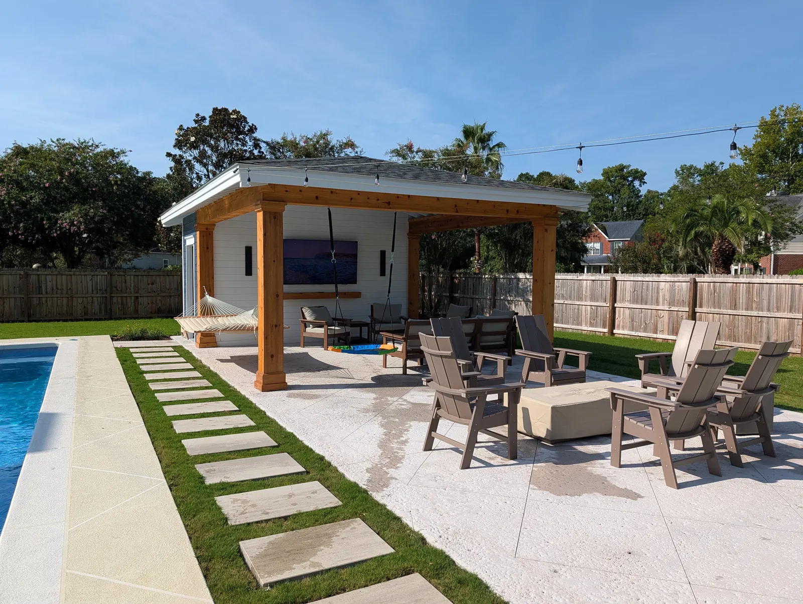
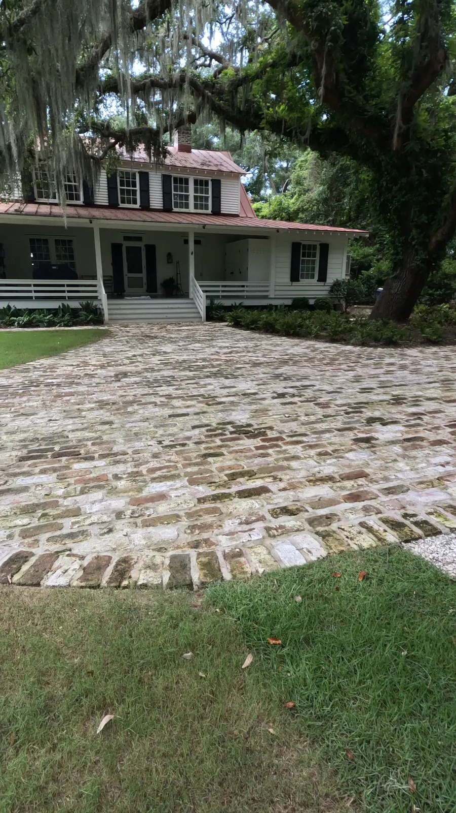

Folly Beach, SC Coastal & Rental Property Landscaping
Landscaping Folly Beach, SC


Landscaping for Coastal Homes & Rentals
Folly Beach homes—whether oceanfront, canal-side, or tucked into residential neighborhoods—require landscaping that’s both beautiful and functional. Our coastal service approach includes:
- Salt-tolerant plants and groundcovers
- Drought-resistant beds for sandy soil
- Drainage and erosion control near dunes or marshes
- Smart irrigation systems that conserve water
- Low-maintenance solutions ideal for vacation homes and Airbnb rentals
Our team helps you enhance curb appeal, protect your property, and reduce upkeep with customized, climate-savvy designs.
Our Services Landscaping on Folly Beach
We offer a full suite of services designed to match Folly’s laid-back beach culture and environmental considerations:Landscape Installation

Install vibrant plant beds, native grasses, and palm trees that hold up against salt spray and shifting sands. Perfect for creating a lush beachside retreat.
Hardscape Installation

Add functionality with walkways, outdoor showers, driveways, patios, and pool decks that are built for sandy foundations and harsh conditions.
Irrigation Systems Installation

We install efficient irrigation systems using corrosion-resistant components and zoned layouts that adapt to sandy soil and coastal plant needs.
Drainage & Grading

Folly’s low elevation and seasonal storms demand smart water management. We use swales, dry creek beds, and regrading to keep water away from your home’s foundation and hardscapes.
Pruning & Bed Care After Install

We are not a mowing company. For clients we have built large projects for, we come back to prune and shape the planting as it was designed to grow.
Mulch & Bed Edging

Mulch helps retain moisture and prevents weeds. We offer pine straw, hardwood, and shell mulch installed with crisp edges.
Site Structures

Enhance your outdoor living with pergolas, fencing, outdoor showers, and custom storage—all crafted with weather-resistant materials suited for beach homes.
Designed with Rentals and Second Homes In Mind
As one of Charleston’s most popular vacation destinations, Folly Beach hosts hundreds of short-term rentals and second homes. We build landscapes that look great with minimal maintenance.
Our work for rental properties includes:
- Installing drought-resistant, low-maintenance yards
- Adding curb appeal for booking photos and guest impressions
- Building hardscapes and structures to expand outdoor entertaining areas
We understand how to protect your landscape and your time—whether you manage a few properties or just one beach getaway.

1 / 2 2 / 2
2 / 2Common Coastal Design Solutions

Our Folly Beach projects often include:
- Salt-tolerant palm clusters and sea oats
- Paver driveways and gravel walkways for sand control
- Outdoor showers and rinsing stations
- Raised patios for ocean-view entertaining
- Rain gardens and French drains for flood-prone lots
- Smart drip irrigation to reduce water use
We design everything with climate, functionality, and beauty in mind—so your landscape is ready for both guests and the weather.
Where We Work Areas We Cover on Folly Beach
We provide services across the island, including:
- East Ashley Ave & The Washout
- West Indian Ave neighborhoods
- Cooper & Hudson Ave corridors
- Folly River communities
- Turnover-heavy Airbnb zones
- New construction and teardown lots
We’re experienced with tight driveways, elevated homes, HOA coordination, and builder-grade landscaping upgrades.

1 / 2 2 / 2
2 / 2Combine Services For Coastal Efficiency
Our most popular pairings for Folly Beach clients include:
- Landscape + Irrigation Installation
- Hardscaping + Drainage Work
We streamline the process from design to cleanup and keep you informed every step of the way—even if you’re out of town.
Frequently Asked Questions
Can you work with elevated beach homes?
Absolutely. We routinely design for stairs, stilts, elevated patios, and under-home parking areas.
Do you install gravel or shell driveways?
Yes. We offer driveways, paths, and walkways using beach-appropriate materials that are code-compliant and durable.
Explore Everything We Build
From plantings and drainage to patios, pergolas and outdoor kitchens, see the full range of services we offer in Folly Beach and across the Lowcountry.
Request a Free Landscape Consultation
Book Your Folly Beach Landscaping Consultation
Whether you’re preparing for peak rental season or want a lasting upgrade for your coastal home, Cramers Landscaping brings the experience, detail, and communication Folly Beach homeowners rely on.
Contact us today to schedule a walkthrough and get a quote.